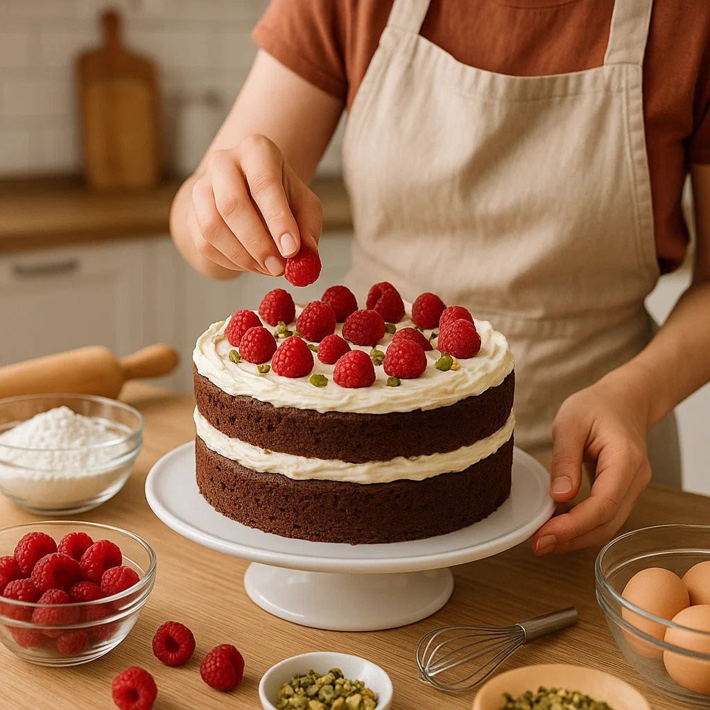

5 Tips de Repostería para Impresionar a Todos
La repostería es un arte, pero con algunos consejos prácticos puedes mejorar tus creaciones y hacer que luzcan como hechas por un profesional:
- Mide bien los ingredientes: pequeñas diferencias pueden cambiar la textura.
- Usa ingredientes a temperatura ambiente: mantequilla y huevos se integran mejor y logran una mezcla más homogénea.
- Decora con creatividad: utiliza mangas pasteleras, moldes y toppings para hacer tus postres más atractivos.
- Conoce tus hornos: cada horno es distinto, controla la temperatura y tiempos para evitar que se quemen o queden crudos.
- Practica la paciencia: deja que los bizcochos enfríen antes de decorarlos, y tómate tu tiempo para obtener resultados perfectos.